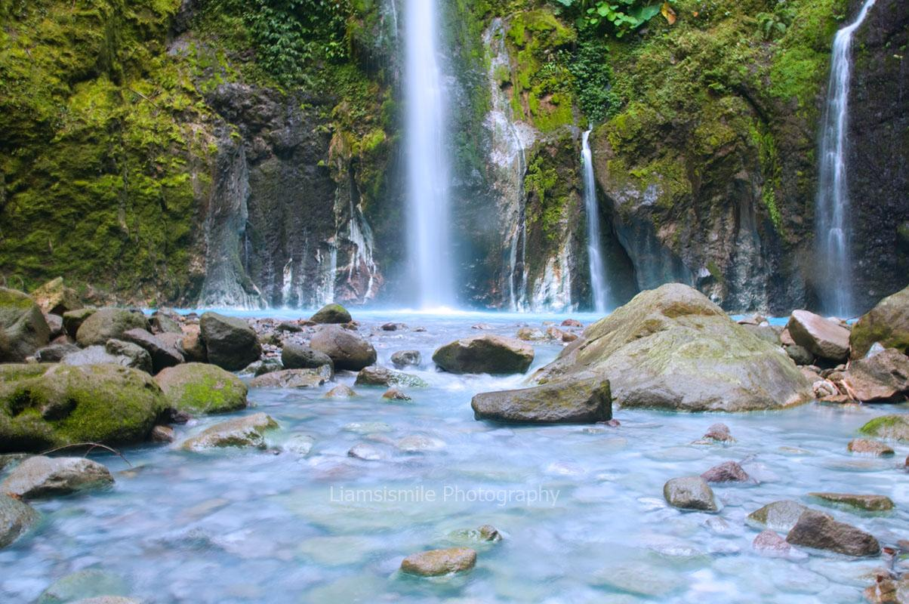
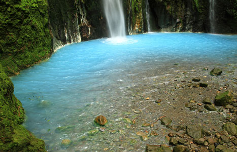

WISATA AIR TERJUN DUA WARNA - SIBOLANGIT
 Apr 3, 2015Views : 1,759,429
Apr 3, 2015Views : 1,759,429
Kekayaan alam Indonesia tidak pernah ada habisnya kalau ditelusuri, keeksotisannya yang dapat memanjakan sepasang mata pengunjung setiap melihatnya. Langsung saja, kali ini kami akan memberi informasi tempat wisata yang cocok untuk menghabis waktu liburan pengunjung setia kami. Sumatera Utara terkenal akan kayanya tempat wisata yang tersembunyi dan sulit dijangkau, tapi yang namanya liburan pasti sesulit apapun medan menuju tempat tersebut akan dilalui juga hehe.
 
Air terjun Dua Warna terletak di kec. Sibolangit, Sumatera Utara. Air terjun ini berasal dari Gunung Sibayak. Tempat ini berada pada 1270 meter dpl. Unik sekali nama tempat ini Air Terjun Dua Warna. Karena air terjun ini memiliki dua gradasi warna yang berbeda. Air yang tertampung dari pancurannya di bawah berwarna putih keabu-abuan sementara air terjun yang tumpah riuh dari atas berwarna biru muda. Anda akan semakin terkagum-kagum sebab di lokasi Air terjun Dua Warna, tidak hanya terdapat satu air terjun saja, melainkan tiga. Sungguh luar biasa keajaiban Sang Pencipta Alam Semesta ini bukan.
Wisatawan dari ras Tionghoa juga kerap menyambangi tempat ini. Mereka meyakini bahwa Air Terjun Dua Warna akan memberi keberuntungan bagi mereka. Setelah di teliti secara ilmiah, ternyata perbedaan warna ini disebabkan air yang mengandung forfor dan belerang. suhu air terjun ini pun sangat unik. Suhu dingin pada air yang berwarna biru, dan suhu hangat pada air berwarna putih keabu-abuan. Selain berenang dan bermain di Air, Anda juga bias menghangatkan badan anda dengan membuat api unggun dan Anda juga bisa mendirikan kemah disini untuk bermalam agar Anda akan merakan aura alam ini menyatu ke jiwa Anda .
Hampir lupa, karena keasikan berbagi informasi Air Terjun Dua Warna terletak di Desa Durin Sirugun, Kecamatan Sibolangit, Kabupaten Deli Serdang, Provinsi Sumatera Utara. Air terjun ini berada persis di area kaki Gunung Sibayak. Jika anda dari kota Medan akan menempuh jarak 75km untuk sampai ke Kecamatan Sibolangit. Dari pusat kecamatan untuk sampai ke lokasi cukup jauh karena akan memakan waktu 3jam perjalanan. Bagi anda yang masih baru pertama kali berkunjung, alangkah baiknya Anda menggunakan jasa pemandu wisata agar tidak keliru.
Untuk biaya anda akan diminta Rp 25.000 saat hendak memasuki kawasan ini. Mengingat lokasi sangat jauh kedalam hutan dan merupakan area pertualangan. Anda bisa menyewa pemandu wisata dengan harga kisaran Rp 100.000 sampai Rp 300.000 tergantung rombongan yang Anda bawa. Tempat wisata ini sangat cocok bagi anda yang memiliki Jiwa Petualang terkhususnya.